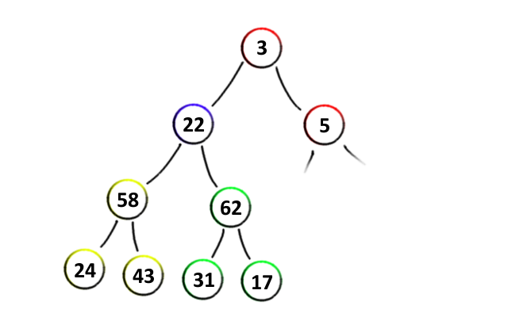

| tags:[ proof ]
Make heap složitost
Kontext
Halda je užitečná datová struktura. Avšak mnozí tvrdí, že ji lze z neseřazeného pole nainicializovat v čase $O(n)$. To nemusí na první pohled dávat smysl — kdyby totiž člověk vytvářel haldu postupným přidáváním prvků, tak by její vytvoření mělo složitost $\mathcal O(n \log(n))$. Tak jak to tedy je?
Tvoření haldy neprobíhá postupným přidáváním prvků, ale opravy h-vlastnosti zespodu. Když si představíme haldu jako strom (viz obrázek), tak se od spodu bere každý podstrom a udělá se z něj halda. Protože se prvky berou odspodu, tak vždy víme, že synové podstromu, ze kterého se snažíme udělat haldu už haldy jsou (žlutý a zelený), a tak stačí pouze prvku na vrcholku upravit h-vlastnost (modrý).

Teorém: Vytvoření haldy má složitost $\mathcal O(n)$.
Důkaz
Pro všech n prvků musíme opravit h-vlastnost — to znamená prohodit jej s větším z potomků, pokud je prvek menší než alespoň jeden z jeho potomků. Tato operace se potom volá rekurzivně a víme, že se provede maximálně g krát, kde g je výška uzlu. Doplňme haldu tak, aby všechny listy ležely ve stejné hloubce. Tímto nezvětšíme velikost haldy o více jak n/2. Nyní spočteme kolik uzlů je v jedné výšce g. Protože je halda úplný binární strom, tak se s hloubkou počet uzlů dvojnásobí. Výška je však pojem opačný, takže začneme s vysokým počtem uzlů, který se bude se zvyšující se výškou dělit dvěma. Tedy: ve výšce g a hloubkce stromu h je \[ \frac{2^h}{2^g}. \]
Z toho co jsme si doposud řekli vyplývá, že počet operací pro celé jedno patro je \[ g \frac{2^h}{2^g}. \]
Pro sečtení všech pater použijeme sumu \[ \sum_{g=1}^h g \frac{2^h}{2^g}. \]
Hodnota h není v sumě proměnnou a tak ji můžeme vytknout. \[ 2^h \sum_{g=1}^h \frac{g}{2^g} \]
Nyní se zaměříme pouze na člen sumy. Víme, že všechny členy sumy jsou nezáporné, a tak je suma určitě menší než součet s intervalem do nekonečna. Tuto sumu můžeme upravit vytknutím 1/2. Dále jen změníme index sumy. Potom sumu rozložíme na dvě, podle čitatele podílu. Nakonec z první sumy odebereme prvek pro $g=0$, protože výraz vychází 0, ten sumu nijak nemění.
\[ \sum_{g=1}^h \frac{g}{2^g} \leq \sum_{g=1}^\infty \frac{g}{2^g} = \frac{1}{2} \sum_{g=1}^\infty \frac{g}{2^{g-1}} \] \[ = \frac{1}{2} \sum_{g=0}^\infty \frac{g + 1}{2^g} = \frac{1}{2} \left(\sum_{g=0}^\infty \frac{g}{2^g} + \sum_{g=0}^\infty \frac{1}{2^g}\right) \] \[ = \frac{1}{2} \left(\sum_{g=1}^\infty \frac{g}{2^g} + \sum_{g=0}^\infty \frac{1}{2^g}\right) \]
Z rovnice dostáváme vztah \[ \sum_{g=1}^\infty \frac{g}{2^g} = \frac{1}{2} \left(\sum_{g=1}^\infty \frac{g}{2^g} + \sum_{g=0}^\infty \left(\frac{1}{2}^g\right)\right) \]
Po substituci SUM výraz zjednodušíme. \[ a = \frac{1}{2} \cdot (a + b) \rightarrow a = a/2 + b/2 \rightarrow a = b \]
Zpátky dostáváme následující vztah. \[ \sum_{g=1}^\infty \frac{g}{2^g} = \sum_{g=0}^\infty \frac{1}{2^g} \]
Pravá strana výrazu má tvar geometrické řady, pro kterou je známý součtový vzorec. Mnoho lidí umí tuto řadu sečíst i bez součtového vzorce. \[ \sum_{g=0}^\infty \frac{1}{2^g} = 1 + \frac{1}{2} + \frac{1}{4} + \frac{1}{8} + \cdots = 2 \]
Z toho vyplývá, že \[ \sum_{g=1}^h \frac{g}{2^g} < 2. \]
A tak součet všech operací přes všechny prvky všech pater haldy je \[ 2^h \sum_{g=1}^h \frac{g}{2^g} < 2^{h+1}. \]
A protože pro hloubku úplného binárního stromu platí $h = \log(n)$, dostáváme složitost make heap \[ \mathcal O(2^h) = \mathcal O(2^{\log(n)}) = \mathcal O(n). \]
Což jsme chtěli dokázat. $\square$